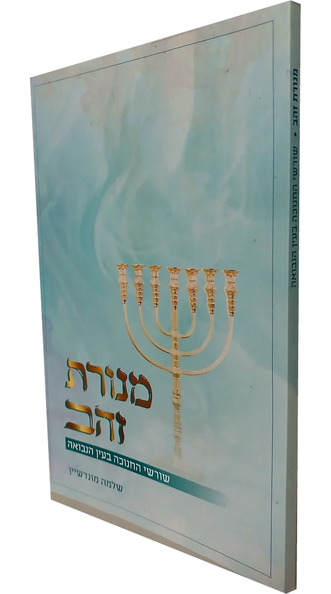

מנורת זהב
שורשי החנוכה בעין הנבואה · הרב שלמה מונדשיין
מסע אל שורשיו הרוחניים והרעיוניים של החנוכה, ומבט על תהליך התקדמותו של עם ישראל לאורך ההיסטוריה, מתוך התבוננות והעמקה בדברי נביאי ראשית תקופת בית שני.
שערי הספר
הספר מחולק לשערים לפי נבואות הנביאים שבהם הוא עוסק.